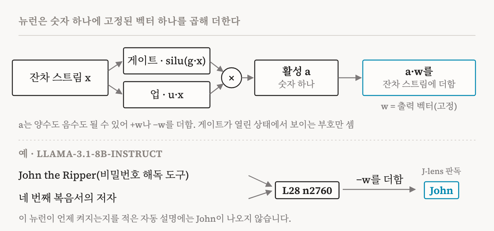
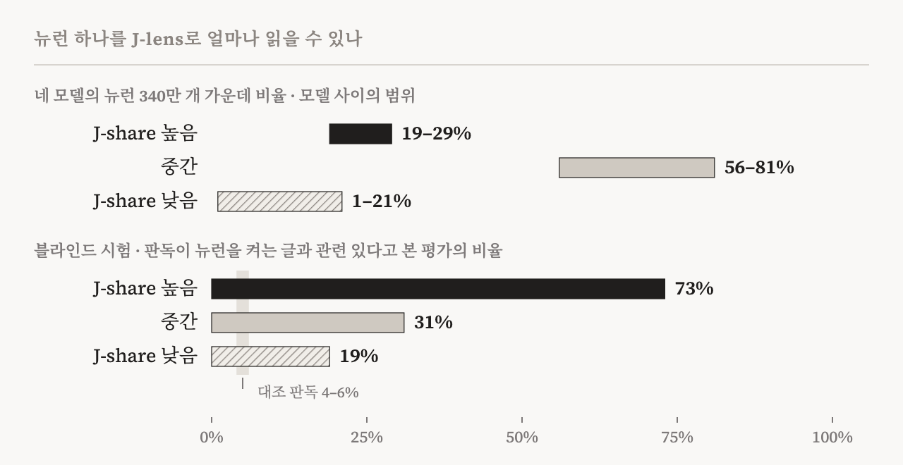
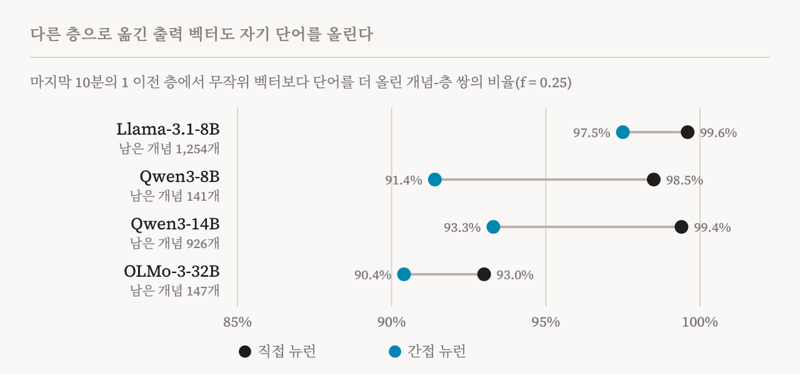
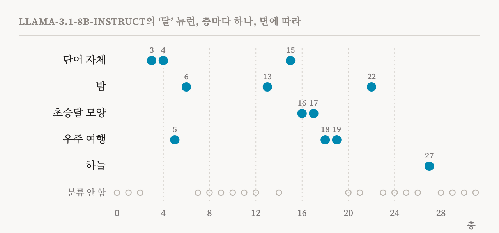
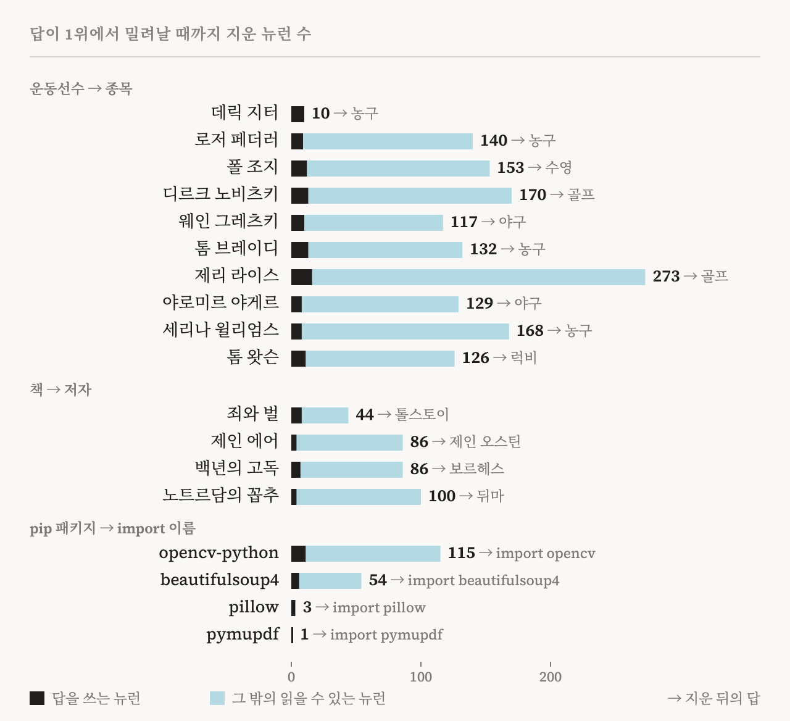
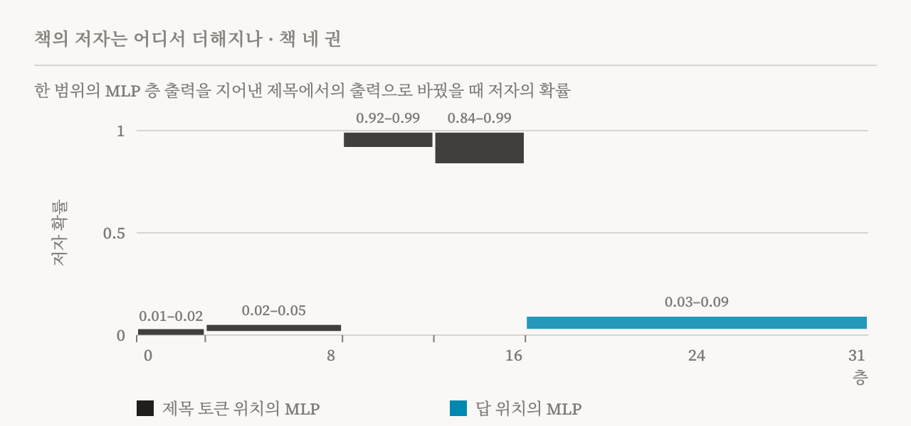

2026년 11월 23일, Anthropic의 정렬 과학 블로그(Alignment Science Blog)에 짝을 이루는 글 두 편이 올라왔습니다. Anthropic Fellows 프로그램에서 Jasmine Shone과 Lisa Dunlap이 수행한 연구로, 제목은 「해석 가능성을 위해 뉴런 기저로 돌아가기(Returning to the Neuron Basis for Interpretability)」입니다. 1부는 언어 모델을 뉴런 하나하나의 단위로 읽기 어렵다는 세 가지 반론을 다시 시험하고, 2부는 그렇게 읽은 뉴런을 안전 연구에 써 봅니다.
이 글은 1부를 본문과 부록까지 빠짐없이 정리한 것입니다. 주장과 해석은 모두 저자들의 것입니다. ‘쉬운 풀이’ 상자는 읽기를 돕기 위해 덧붙인 설명과 비유로, 원문에는 없습니다. 2부는 다음 글 「뉴런 기저로 돌아가기 2부: 안전 연구에 쓰는 뉴런」에서 정리합니다.
읽기 전에: 기본 개념
연구자들이 뉴런을 떠난 이유
오늘날 해석 가능성(interpretability) 도구는 대부분 뉴런 위에 세워져 있지 않습니다. 학습으로 얻은 특징(feature)을 쓰는 희소 오토인코더(sparse autoencoder)와 트랜스코더(transcoder), 잔차 스트림(residual stream)의 방향을 쓰는 프로브(probe)·조종 벡터(steering vector)·렌즈(lens), 그리고 활성을 자연어로 설명해 주는 별도의 모델이 주로 쓰입니다. 뉴런을 바탕으로 한 도구는 드뭅니다.
저자들은 연구자들이 뉴런에서 멀어진 배경으로 세 가지 관찰을 꼽습니다. 첫째, 뉴런 하나가 서로 무관한 여러 입력에 켜집니다(Olah et al., 2020; Elhage et al., 2022; Gurnee et al., 2023; Bricken et al., 2023). 뉴런을 자동으로 설명해 보면 잘 맞지 않는 경우가 많고(Bills et al., 2023), 어떤 데이터로 보느냐에 따라 설명이 달라집니다(Bolukbasi et al., 2021). 둘째, 표상이 층마다 바뀌는 것처럼 보입니다(Belrose et al., 2023; Lindsey et al., 2024; Balcells et al., 2024; Lawson et al., 2025). 셋째, 사실 회상 같은 계산이 많은 뉴런에 흩어져 있는 것처럼 보입니다(Nanda et al., 2023; Chughtai et al., 2024).
이 관찰을 그대로 받아들이면 세 가지 결론이 나옵니다. 중첩(superposition) 때문에 뉴런 하나하나는 해석할 수 없고, 층끼리 좌표를 공유하지 않으니 층을 넘나들며 뉴런을 이어 보기 어렵고, 사실 하나를 지우거나 고치기도 매우 어렵다는 것입니다. 1부는 이 세 가지를 차례로 다시 시험합니다.
뉴런은 맥락이 여닫는 조종 벡터
저자들의 출발점은, 뉴런 하나가 하는 일이 구조상 비교적 단순하다는 것입니다. MLP 뉴런의 활성(activation)은 맥락에 따라 달라지는 숫자 하나이고, 뉴런은 그 숫자에 고정된 벡터 하나를 곱해 잔차 스트림에 더합니다. 그래서 저자들은 뉴런을 맥락이 여닫는 조종 벡터(context-gated steering vector)로 볼 수 있다고 말합니다.
이 연구의 모델들은 모두 SwiGLU 구조의 MLP를 씁니다. 뉴런 하나는 잔차 스트림 x에서 활성 a = silu(g·x)(u·x)를 계산합니다. g와 u는 게이트(gate) 행렬과 업 프로젝션(up projection) 행렬 가운데 이 뉴런의 행입니다. 그런 다음 뉴런은 a·w를 잔차 스트림에 더합니다. w는 다운 프로젝션(down projection) 행렬 가운데 이 뉴런의 열로, 저자들은 이를 출력 벡터(output vector)라고 부릅니다. 출력 가중치나 값 벡터(value vector)라고도 부르는 것입니다.
u·x는 양수일 수도 음수일 수도 있으므로, 뉴런은 +w를 더하기도 하고 −w를 더하기도 합니다. 둘을 한꺼번에 더할 수는 없으므로 저자들은 두 부호를 따로 다루고, 두 부호가 서로 다른 뜻을 가질 수 있다고 봅니다. 세부 사항이 하나 있습니다. SiLU는 음수 입력에서 0에 가깝지만 정확히 0은 아니어서(최솟값이 약 −0.28), 게이트가 닫혀 있을 때도 작은 활성이 흔히 반대 부호로 새어 나옵니다. 저자들은 닫힌 게이트가 ReLU 뉴런의 0 구간과 같은 역할을 한다고 보고, 게이트가 열린 상태(g·x > 0)에서 나타나는 부호만 그 뉴런이 실제로 쓰는 부호로 셉니다.
도판 1이 그 예입니다. Llama-3.1-8B-Instruct의 L28 n2760(28번째 층의 2760번 뉴런)은 비밀번호 해독 도구 John the Ripper에 관한 사실에서도, 네 번째 복음서의 저자 요한(John)에 관한 사실에서도 ‘John’을 더합니다. 이 뉴런이 언제 켜지는지를 적은 자동 설명(Choi et al., 2024)에는 John이 나오지 않습니다. 이 뉴런은 게이트가 열린 상태에서 음의 활성만 보이므로, 실제로 더하는 것은 −w입니다.

이 관점에서 저자들은 뉴런마다 출력 벡터를 해석하고, 그 뉴런이 켜지는 맥락과 합쳐 뉴런의 기능에 관한 가설을 세웁니다. 그리고 그 가설을 개입(intervention)으로 시험합니다. 뉴런의 활성을 없애는 제거(ablation), 출력 벡터를 다른 층에 주입하기, 출력 벡터로 모델을 조종하기(steering)입니다.
저자들이 내세우는 기여는 네 가지입니다. 네 모델의 모든 뉴런에서 출력 벡터를 렌즈로 얼마나 읽을 수 있는지 재고, 그 판독이 뉴런이 켜지는 글과 우연보다 훨씬 자주 맞는다는 것을 보였습니다. 언제 켜지는지와 무엇을 더하는지를 함께 따지는 다의성(polysemanticity)의 분류를 제안하고, 무관한 개념 둘을 한꺼번에 더하는 뉴런이 드물지만(약 1% 이하) 실제로 있다는 것을 처음으로 찾아냈습니다. 뉴런들이 층을 가로질러 대략 고정된 기저(basis)로 쓴다는 것과, 개념이 깊이에 따라 달라 보이는 것은 뒤쪽 뉴런이 그 개념의 새로운 면을 더하기 때문일 가능성이 높다는 것을 보였습니다. 마지막으로 Llama-3.1-8B-Instruct의 사실 18개를 뉴런 단위까지 추적했습니다. 대부분의 답은 여러 회상 경로로 도달하기 때문에 사실 하나를 지우려면 대개 많은 뉴런을 건드려야 하고, 그래서 사실이 흩어져 있는 것처럼 보인다고 저자들은 말합니다. 그래도 해석 가능한 뉴런, 곧 그 사실과 관련되거나 상관된 뉴런만 지워도 회상된 사실이 바뀌었습니다.
J-lens로 출력 벡터 읽기
뉴런을 하나의 함수로 해석하려면 출력 벡터를 읽을 방법이 필요합니다. 출력 벡터는 잔차 스트림에 더해지므로, 저자들은 Gurnee et al.(2026)의 J-lens로 읽습니다. J-lens는 잔차 스트림의 어떤 방향이 모델로 하여금 어떤 토큰(token)을 더 말하게 하는지를 근사합니다. 이 사이트의 「AI의 전역 작업 공간 이론」에서 다룬 도구입니다. 저자들이 로짓 렌즈(logit lens)를 쓰지 않은 것은, 로짓 렌즈의 판독은 마지막 몇 층 이전에서는 앞뒤가 맞지 않는 경우가 많고(nostalgebraist, 2020; Belrose et al., 2023), Gurnee et al.(2026)이 앞쪽과 중간 층에서 J-lens의 판독이 더 낫다는 것을 보였기 때문입니다.
J-lens는 층마다, 토큰마다 방향을 하나씩 줍니다. 그 층에서 그 방향으로 상태를 밀면, 뒤쪽 층들을 거쳐 그 토큰의 출력 로짓(logit)이 1차 근사로 가장 많이 올라가는 방향입니다. 부록에 따르면 층 L에서 토큰 t의 J-lens 방향은, 마지막 정규화의 이득(gain)을 접어 넣은 언임베딩(unembedding) 행렬 W_U에 야코비안(Jacobian) J_L을 곱한 행렬의 t번째 행을 단위 길이로 맞춘 것입니다. J_L은 마지막 층의 잔차 스트림을 층 L의 잔차 스트림으로 미분한 것을 여러 입력에 걸쳐 평균한 값입니다. 저자들은 Gurnee et al.이 공개한 J-lens 파일을 그대로 썼습니다.
저자들은 뉴런마다 가중치만으로 세 가지 양을 계산합니다. 첫째는 판독(readout)으로, J-lens 방향이 w와 코사인이 가장 높은 토큰들의 목록입니다. 이 용어는 Gurnee et al.에게서 가져왔습니다. 둘째는 말로 옮길 수 있는 부분(verbalizable part)으로, 토큰 방향 최대 25개를 음이 아닌 계수로 섞어 w에 가장 가깝게 만든 근사입니다. 셋째는 J-share로, 단위 길이의 출력 벡터 w와 그 말로 옮길 수 있는 부분 v에 대해 1 − ‖w − v‖², 곧 출력 벡터 가운데 말로 옮길 수 있는 부분이 설명하는 비율입니다. Gurnee et al.이 개념 벡터에 대해 보고한 설명된 변동 비율과 같은 양을 뉴런의 출력 벡터에 적용한 것입니다. 저자들은 각 뉴런의 J-share를 같은 층의 무작위 단위 방향 2,048개와 비교해, 그 분포의 99번째 백분위수보다 높으면 높음, 1번째 백분위수보다 낮으면 낮음, 그 사이면 중간으로 나눕니다. 마지막 층에서는 J-lens 대신 언임베딩을 씁니다.
저자들은 출력 벡터의 판독을 뉴런이 내놓는 단어 목록으로만 읽지 않고, 어떤 개념의 다음 토큰 예시로 읽습니다. ‘개념’은 앞선 연구처럼 주제, 개체, 단어의 뜻처럼 사람이 알아볼 수 있는 성질을 느슨하게 가리킵니다(Bau et al., 2017; Kim et al., 2018). 예를 들어 Llama-3.1-8B-Instruct의 L22 n1766의 판독은 Karl, Marx, Victorian, Manchester, Dickens, 184(‘1840’의 앞부분)이고, 저자들은 이를 ‘19세기’라는 개념으로 해석합니다.
J-share 전수 조사
저자들은 네 모델, 곧 Llama-3.1-8B-Instruct, Qwen3-8B, Qwen3-14B, OLMo-3-32B의 뉴런 약 340만 개를 모두 조사했습니다. J-share가 높은 뉴런은 19–29%, 중간은 56–81%, 낮은 뉴런은 1–21%였고, 뉴런 J-share의 중앙값은 무작위 방향 J-share 중앙값의 1.02–1.26배였습니다.
판독이 실제로 뉴런의 일을 가리키는지 보려고 저자들은 블라인드 시험을 했습니다. 모델마다 뉴런 1,000개를 뽑되, 절반은 그 층의 평균 J-share보다 높고 절반은 낮게 했습니다. 그리고 뉴런마다 같은 층, 같은 절반에서 대조 뉴런을 하나씩 짝지었습니다. 말뭉치에서 게이트가 한 번도 열리지 않는 뉴런은 뺐습니다(Qwen3-8B에서 79개, Qwen3-14B에서 79개). 평가 항목마다 그 뉴런을 가장 강하게 켜는 글 다섯 대목과, 토큰 15개짜리 판독 하나를 보여 줍니다. 판독은 그 뉴런의 것일 수도, 대조 뉴런의 것일 수도, 무작위 방향의 것일 수도 있습니다. 평가자는 자동 설명을 보지 않습니다. Claude 평가자 둘이 항목마다 뚜렷한 연관, 약한 연관, 연관 없음 가운데 하나를 고르고, 뚜렷하거나 약하면 관련 있음으로 셉니다.
결과는 J-share가 높음, 중간, 낮음인 뉴런에서 각각 평가의 73%, 31%, 19%가 판독과 글이 관련 있다고 본 것이었습니다. 대조 판독은 4–6%였습니다(무작위 방향은 2–4%, 같은 층의 다른 뉴런은 5–8%). 저자들은 이 수치가 실제보다 낮게 잡혔을 가능성이 높다고 봅니다. 도판 1의 John 뉴런처럼, 뉴런을 가장 강하게 켜는 글 자체가 그 뉴런의 일을 놓칠 수 있기 때문입니다. 그래서 저자들은 판독을 뉴런 기능에 관한 가설로 다루고, 개입으로 시험합니다. 파일(the Pile) 데이터를 쓰는 모든 결과에서는 Books3, BookCorpus2, StackExchange, OpenWebText2 부분을 뺐습니다. 파일의 첫 10,000개 문서인 Pile-10k에서는 이렇게 하면 7,070개가 남습니다.

J-share에 따라 판독의 성격도 다릅니다. J-share가 높은 뉴런은 대개 켜지는 자리에서 한 단어의 여러 형태를 더합니다. 예를 들어 Llama-3.1-8B-Instruct의 L22 n5208은 요리법이나 요구 사항 글의 ‘calls’에서 켜지고 call, calls, _call을 더합니다. 대다수를 차지하는 중간 J-share 뉴런은 흔히 서로 다른 단어로 같은 개념을 가리킵니다. J-share가 딱 중앙값인 L4 n4934의 판독은 salads, lettuce, salad, cabbage입니다.
J-share가 가장 낮은 뉴런은 다른 경향을 보입니다. 출력 벡터가 뒤쪽 어텐션 헤드(attention head)의 쿼리(query)와 정렬하는 경향입니다. J-share 하위 2%의 출력 벡터는 뒤쪽 어텐션 헤드의 3–18%와 정렬했는데, 무작위 방향은 1% 미만이었습니다. 정렬의 정도는 단위 출력 벡터를 헤드의 쿼리 사영(query projection)에 통과시킨 크기의 제곱으로 재고(앞의 RMSNorm 이득을 쿼리 가중치에 접어 넣음), 무작위 단위 방향 4,096개의 값과 비교했습니다. 깊이 10–90% 구간에서 이렇게 정렬한 헤드의 수가 무작위 방향의 99번째 백분위수를 넘으면 ‘쿼리와 강하게 정렬’로 정의하면, J-share가 낮은 뉴런의 53–76%가 여기에 해당했고 전체 뉴런은 23–36%였습니다. 또 J-share는 Gurnee et al.이 어떤 방향을 말로 옮길 수 있는지 판단할 때 쓴 판독 첨도(kurtosis)보다 강한 쿼리 정렬을 더 잘 예측했습니다(AUROC 0.69–0.77, 첨도는 0.34–0.64).
반론 1: 뉴런 하나가 무관한 개념 둘을 더하는가
보통은 뉴런이 서로 무관한 입력에 켜지면 다의적(polysemantic)이라고 부릅니다. 저자들은 이 정의가 뉴런의 효과를 결정하는 출력 벡터를 빠뜨린다고 지적하고, 뉴런이 언제 켜지는지와 무엇을 더하는지를 함께 따지는 분류를 제안합니다. 여기서 뉴런이 어떤 개념을 ‘더한다’고 말하려면, 그 뉴런을 0으로 만들었을 때 그 개념에 속한 단어들의 확률이 내려가야 합니다.
1형(type 1) 뉴런은 서로 무관한 주제에서 켜지지만, 어디서 켜지든 한 개념을 더합니다. 2형 뉴런은 두 부호로 서로 무관한 개념을 더합니다. 예를 들어 +w로는 마스카라를, −w로는 라디오를 더하는 식이어서, 두 개념을 한꺼번에 더하는 일은 없습니다. 3형 뉴런은 한 부호로 무관한 개념 둘을 더합니다. 활성 한 번이 무관한 개념 둘을 더하는 경우는 이것뿐입니다.
3형은 드뭅니다. 저자들은 모델마다 중간 층 뉴런을 무작위로 뽑으면서, 측정할 만한 효과가 있는 부호 방향(+w나 −w)이 1,000개 이상 모일 때까지 계속했습니다(모델마다 1,016–1,084개). 효과가 있다는 것은, 뉴런이 가장 강하게 켜지는 맥락에서 그 뉴런을 0으로 만들었을 때 다음 토큰 확률이 무작위 방향을 0으로 만들 때보다 더 크게 바뀐다는 뜻입니다. 이 가운데 아래의 네 가지 검사를 모두 통과한 것은 모델마다 0–2개였고, 검사가 놓치는 비율까지 보정하면 3형은 효과가 있는 부호 방향의 많아야 0.4–1.1%입니다.
네 가지 검사는 이렇습니다. 첫째, 뉴런이 두 주제의 문서 모두에서 강하게 켜져야 합니다. 강하게 켜진다는 것은 무작위 Pile-10k 문서 200개의 모든 위치에서 잰 활성 분포의 99.9번째 백분위수를 넘는다는 뜻이고, 주제마다 최소 5개 문서에서, 무작위 문서보다 0.07 이상 높은 비율로 그래야 합니다. 주제 문서는 Claude가 쓴 주제어 목록과 맞는 Pile-10k 문서로, 최대 150개를 첫 일치 지점 주변 1,500자 창에서 앞 256토큰만 씁니다. 둘째, 한 주제의 문서에서 뉴런을 0으로 만들면 다른 주제 단어들의 확률이, 같은 노름(norm)의 무작위 방향 20개를 0으로 만들 때보다 더 내려가야 합니다. 내려간 폭은 최소 0.03나트(nat)이고 무작위 방향보다 표준편차 3배 이상 커야 합니다. 셋째, 그 효과가 두 주제에 특정해야 합니다. 두 나라처럼 둘이 함께 속하는 넓은 범주 전체에 대한 효과라면 안 됩니다. 같은 범주의 다른 단어들이 다른 주제 단어의 4분의 1 이상만큼, z 점수 3 이상으로 내려가면 탈락합니다. 넷째, 효과가 단어 조각이 아니라 온전한 단어에 나타나야 합니다.
검사가 진짜 3형을 얼마나 잡아내는지도 쟀습니다. 뉴런의 출력 벡터를, 서로 무관한 주제를 다루는 두 뉴런의 출력 벡터의 합으로 바꿔 끼운 합성 뉴런을 모델마다 54–60개 만들었고, 그 가운데 효과가 측정되는 48–60개에서 둘째부터 넷째 검사가 62–81%를 잡아냈습니다. 합성 뉴런은 두 주제에서 켜지지 않으므로 첫째 검사는 적용하지 않았습니다.
그래도 3형 뉴런은 있습니다. 네 가지 검사는 뉴런마다 두 주제와 그 문서와 단어가 필요해서 모든 뉴런에 돌리기에는 비쌉니다. 그래서 저자들은 먼저 값싼 방법 세 가지로 후보를 찾았습니다. 판독 토큰을 주제별로 묶기, 다른 뉴런 두 개의 출력 벡터로 그 뉴런의 출력 벡터를 재구성해 보기, 가장 강하게 켜지는 글을 묶기입니다. Llama-3.1-8B-Instruct에서는 8–28층의 뉴런 301,056개 가운데 약 44,000개가 걸렸고, 두 주제의 글에서 모두 켜지거나 자동 효과 시험을 통과한 약 4,500개를 남긴 뒤, 판독이 무관한 두 주제에 관한 54개를 남겨 네 가지 검사를 했습니다. 네 모델을 합쳐 35개가 통과했습니다(모델마다 3–17개). 후보의 일부만 시험했으므로 이 수는 하한이고, 3형이 얼마나 흔한지는 앞의 무작위 표본이 추정합니다. 단어를 공유하는 주제도 셉니다. Qwen3-14B의 L30 n4527은 학자금 대출과 정전기를 더하는데, 판독은 ‘charge’의 여러 형태입니다.
| 모델과 뉴런: 더하는 두 개념 | J-lens 판독(상위 10개) |
|---|---|
| Llama-3.1-8B L20 n2287 (−): 일론 머스크 + 단백질 번역 | Tesla, Musk, Tesla, Elon, SpaceX, Translate, Translation, Protein, rypton, protein |
| Qwen3-8B L25 n5728 (−): 싱가포르 + Flutter(앱 개발 프레임워크) | 新加坡, .dart, onTap, Singapore, Singapore, singapore, .sg, SizedBox, onPressed, MaterialPageRoute |
| Qwen3-14B L31 n1780 (+): 광둥성 + 플로리다 | 广东省, 深圳市, 深圳, 珠三角, Florida, Miami, 在深圳, Florida, 珠海, 东莞 |
| OLMo-3-32B L26 n18802 (−): 나이지리아 + 말레이시아 | Nigeria, Nigerian, Malaysian, Malaysia, Lagos, Niger, Kuala, Malays, Malay, Punjab |
두 주제의 문서 어느 쪽에서든 이 뉴런들을 0으로 만들면 다른 주제 단어들의 확률이 내려갑니다. 두 장소의 쌍이라면, 다른 장소 단어들에는 효과가 훨씬 작습니다. 부록의 표는 35개 가운데 15개를 더 보여 줍니다. Claude Opus 5.5 평가자 둘이 두 주제만 보고 뚜렷한 연관(같은 단어나 문자열, 고유명사, 같은 범주)이 있는지 판단했는데, 엉덩이 관절 치환과 안경(몸에 착용하는 교정 기구), 리버풀과 탬파(도시와 지역 이름), 자메이카와 테네시(레게, 컨트리, 블루스라는 음악 유산)처럼 연관을 찾은 쌍도 있었고, 특허와 암, 야구와 당뇨, 프런트엔드 자바스크립트와 정맥 질환, 멜버른과 방갈로르, 녹말과 곡물 그리고 야구 투구처럼 찾지 못한 쌍도 있었습니다. 넷은 평가하지 않았습니다.
앞선 연구는 출력 벡터를, 그 벡터가 밀어 올리는 토큰으로 설명했지만(Geva et al., 2022), 저자들이 아는 한 활성 한 번이 무관한 개념 둘을 더하는지를 개입으로 시험한 연구는 없었습니다. 그래서 저자들은 이 뉴런들이 처음 보고되는 3형 뉴런으로 보인다고 말합니다. 앞선 연구는 무관한 맥락에서 켜지는 뉴런이 많다고 했습니다(Olah et al., 2020; Bills et al., 2023). 저자들은 3형이 드무니 그런 뉴런 상당수가 1형이나 2형일 것으로 짐작합니다. 어떤 맥락에서 켜지든, 도판 1의 John 뉴런처럼 활성 한 번은 개념 하나만 더한다는 것입니다. 그래서 1부의 나머지에서는 뉴런의 부호마다 주된 개념 하나를 더한다고 보고, 판독을 그 개념으로 해석합니다.
반론 2: 표상은 층마다 바뀌는가
여러 논문이 잔차 스트림의 표상이 깊이에 따라 흘러간다고 설명합니다(Lindsey et al., 2024; Lawson et al., 2025). 저자들은 뉴런들이 층을 가로질러 대략 고정된 기저로 쓴다는 것을 보이고, 개념이 깊이에 따라 달라 보이는 것은 뒤쪽 뉴런들이 그 개념의 새로운 면(facet)을 더하기 때문일 가능성이 높다고 주장합니다.
각 층은 자기 출력을 잔차 스트림에 더하므로, 한 층이 쓴 방향은 뒤의 층이 지우지 않는 한 상당 부분 남습니다. 그래도 MLP의 뉴런들이 방향을 상쇄할 수는 있으니, 첫 시험은 중간 층 MLP가 잔차 스트림에서 방향을 지우는지입니다. 저자들은 층마다 각 부분층(sublayer)의 평균 선형 사상 M을 Pile-10k 문서 120개(문서마다 최대 256토큰)로 구하고, I + M의 특이값(singular value)을 봤습니다. 특이값이 0이면 그 부분층이 방향을 지운다는 뜻이고, 1이면 그대로 둔다는 뜻입니다. 특이값이 0.1 미만이면 그 방향을 ‘강하게 줄인다’고 부릅니다.
깊이 15–85%의 중간 층에서 MLP가 강하게 줄이는 방향은 모두 합쳐 Llama-3.1-8B-Instruct에서 84개, Qwen3-8B에서 72개, Qwen3-14B에서 32개, OLMo-3-32B에서 16개였습니다. 층마다 잔차 차원이 4,096개나 5,120개인 것과 비교한 수입니다. 중앙값에 해당하는 층은 0개나 1개를 줄였고, 한 층에서 가장 많이 줄인 수는 모델 순서대로 10, 24, 7, 2개였습니다. 어텐션 부분층에도 같은 시험을 하면 층마다 많아야 1개였습니다. 평균 사상이므로, 한 토큰에서는 평균 사상에서 그대로인 방향도 지워질 수 있다는 단서가 붙습니다.
줄어드는 방향이 무엇인지도 봤습니다. 깊이 12–85%의 층마다 가장 많이 줄어드는 MLP 방향을 최대 다섯 개씩, 모두 147개를 골라 두 부호를 J-lens로 읽고 손으로 분류했습니다. 147개 가운데 68개는 한쪽 부호가 코드 문법이나 경로나 식별자로, 40개는 주제로 읽혔습니다. OLMo-3-32B의 17개 가운데 코드로 읽힌 것은 없었습니다. 나머지는 문장 부호나 서식(9개), 단어 조각(9개), 문자 체계나 언어(9개), 기능어(7개), 뚜렷한 패턴 없음(5개)이었습니다. 주제로 읽힌 것도 대부분은 문서의 말투, 출처, 지역, 문체 단어, 사람 이름 목록처럼 글의 종류를 표시하는 것이었고, 내용 주제는 결정, 기계, 동기, 계산, 역사 같은 14개였습니다. 저자들은 본문에서, 해석할 수 있는 줄어드는 방향 대부분이 코드나 문장 부호 양식처럼 글의 종류를 표시한다고 요약합니다.
더 강한 시험은 출력 벡터를 다른 층으로 옮겨 보는 것입니다. 저자들은 한 토큰짜리 개념 명사마다, 그 단어의 확률을 올리는 것으로 보이는 뉴런 두 개를 골랐습니다. 직접(direct) 뉴런의 출력 벡터는 언임베딩만으로 단어를 올립니다(로짓 렌즈로 읽힘). 간접(indirect) 뉴런은 출력 벡터를 언임베딩으로 읽으면 그 단어가 상위 500위 안에 없지만 J-lens로 읽으면 상위 10위 안에 있어서, 단어에 대한 효과가 뒤쪽 층을 거쳐야만 나타나는 뉴런입니다.
고르는 방법은 이렇습니다. 네 모델의 토크나이저 모두에서 앞에 공백이 붙은 한 토큰인 4–12글자 소문자 단어에서 출발해, WordNet의 명사이면서 가장 흔한 뜻이 명사이고 그 뜻이 수량이나 관계가 아닌 개념 명사 4,890개를 남겼습니다. 깊이 10–82%의 층에서 단어와 층마다, 출력 벡터와 그 단어의 J-lens 방향의 코사인 절댓값이 가장 큰 뉴런 50개를 고르고, 코사인의 부호를 출력 벡터의 부호로 삼습니다. 그 부호가 실제로 활성이 더 큰 쪽이고, 게이트를 앞 층의 J-lens로 읽었을 때 위아래 15개 토큰 가운데 하나가 단어의 앞 네 글자를 담거나 뉴런의 판독 상위 20개에 들어 있어야 남깁니다. 직접 뉴런은 그 단어가 판독에서 6위 이내, 언임베딩에서도 6위 이내여야 하고, 간접 뉴런은 판독 10위 이내, 언임베딩 500위 밖이어야 합니다. 단어마다 판독 순위가 가장 좋은 직접 뉴런과 간접 뉴런을 하나씩 골라, 둘 다 있는 단어만 남겼습니다.
그런 다음 출력 벡터를 한 번에 한 층씩, 모든 위치에 일정한 크기로 더했습니다. 크기는 마지막 층 잔차 스트림의 평균 노름(첫 위치 제외)에 f = 0.1, 0.25, 1을 곱한 값입니다. 그리고 ‘I looked up and saw a’와 ‘Let me tell you about’ 두 프롬프트의 마지막 위치에서 그 단어 토큰의 로짓을 읽고, 같은 방식으로 더한 무작위 단위 방향 세 개의 평균과 비교했습니다. 두 뉴런의 출력 벡터가 모두 자기 층에서, 모든 크기와 프롬프트에서 대조군보다 1로짓 넘게 단어를 올리는 개념만 남겼습니다.
결과는 도판 3과 같습니다. 모델의 마지막 10분의 1 이전 어느 층에서든, 간접 출력 벡터는 개념-층 쌍의 90–98%에서, 직접 출력 벡터는 93–99.6%에서 무작위 방향보다 단어를 더 올렸습니다. 원문 도판은 모델마다 무작위로 뽑은 명사 142개(Qwen3-8B는 남은 141개 전부)를 그려서, 간접 출력 벡터의 비율이 91–98%로 본문의 수치와 조금 다릅니다. 저자들은 이 방향들이 마지막 10분의 1 이전의 모든 층에서 뜻을 대체로 유지하며, 뉴런들이 대략 고정된 기저로 쓴다는 뜻으로 해석합니다.

그렇다면 개념은 왜 깊이에 따라 달라 보일까요? 저자들은 서로 다른 뉴런이 그 개념의 서로 다른 면을 더하기 때문일 수 있다고 봅니다. 개념 10개(달, 고양이, 불, 빨강, 죽음, 두려움, 수학, 재즈, 체스, 초밥)를 네 모델에서 살폈습니다. 개념마다 목표 단어, 같은 범주의 단어 네 개(달이라면 해, 별, 하늘, 바다), 그 단어로 끝나는 문장 16개를 준비하고, 층마다 목표 단어와 다른 네 단어에서 평균 활성이 가장 크게 다른 뉴런을 골랐습니다(목표 단어에서 게이트가 열리는 뉴런 가운데서).
Llama-3.1-8B-Instruct에서 달에 가장 선택적인 뉴런 32개(층마다 하나) 가운데 12개를 판독에 따라 손으로 다섯 면에 나누었습니다. 단어 자체(층 3, 4, 15), 밤(층 6, 13, 22), 초승달 모양(층 16, 17), 우주 여행(층 5, 18, 19), 하늘(층 27)입니다. 나머지 20개는 분류하지 않았습니다.
이 뉴런들의 출력 벡터는 거의 직교합니다. 한 개념의 뉴런들끼리 단위 출력 벡터의 코사인 절댓값 평균은 네 모델에서 0.019–0.043였고, 같은 층의 무작위 뉴런으로 바꿔 20번 뽑은 평균은 0.011–0.013였습니다. 무작위의 두세 배이지만 여전히 거의 직교하는 크기입니다. 각 출력 벡터를 자기 층에서 중립적인 프롬프트 8개(‘I looked up and saw a’ 등)의 모든 위치에, 그 층 이후 평균 잔차 노름의 절반 크기로 더하고, 다른 뉴런의 판독 상위 10개 토큰의 로짓이 얼마나 오르는지를 무작위 방향 여섯 개와 비교했습니다. 같은 면의 단어는 0.80–2.10로짓, 다른 면의 단어는 0.44–0.92로짓 올라, 1.5–2.7배 차이였습니다. 하늘은 뉴런이 하나뿐이라 같은 면 안의 쌍이 없습니다. 원문 도판의 화살표는 첫 뉴런의 출력 벡터를 더하면 둘째 뉴런의 활성이 무작위 방향 대비 z 점수 8를 넘게 오른다는 뜻입니다.

반론 3: 사실은 흩어져 저장되는가
언어 모델이 사실을 어디에 어떻게 저장하는지는 아직 논쟁 중입니다. 한 관점은 MLP 층을 키-값 기억(key-value memory)으로 봅니다. 뉴런이 입력의 패턴에 켜지면 출력 벡터가 그에 딸린 속성을 더한다는 것입니다(Geva et al., 2021). 인과 추적(causal tracing)은 사실의 자리를 주어의 마지막 토큰에서 중간 층 MLP로 짚고, 그 자리에 랭크 1 편집을 하면 사실을 바꿀 수 있다고 보였습니다(Meng et al., 2022). 다른 연구는 회상을 단계로 설명합니다. 앞쪽 MLP가 주어에 여러 속성을 덧붙이고 어텐션이 질문이 묻는 속성을 뽑아낸다는 설명(Geva et al., 2023)과, 독립적인 메커니즘들의 합이라는 설명(Chughtai et al., 2024)이 있습니다. 모델이 아는 사실이 뉴런 수보다 훨씬 많으니 사실이 중첩으로 저장된다고 흔히 가정하고, 운동선수와 종목을 잇는 회상을 뉴런 단위로 설명하려던 시도는 그 회상이 흩어져 있다고 결론지었습니다(Nanda et al., 2023). 반대로 Arora et al.(2026)은 ‘댈러스가 있는 주의 주도’ 같은 두 단계 질문에서 작고 읽을 수 있는 뉴런 회로를 찾았고, 손으로 고른 뉴런 무리를 조종해 시험했습니다. 저자들은 사실의 위치가 실용적인 문제라고 강조합니다. 편집과 언러닝(unlearning) 방법은 흔히 앞쪽과 중간 층의 고정된 범위를 겨냥하는데(Meng et al., 2022; Meng et al., 2023; Li et al., 2024), 이는 사실이 실제로 그곳에 저장될 때만 통하기 때문입니다.
저자들은 Llama-3.1-8B-Instruct에서 사실 18개를 추적했습니다. 운동선수 10명과 종목, 책 4권과 저자, pip 패키지 4개와 import 이름입니다. 사실마다, 출력 쪽이나 게이트 쪽에서 읽을 수 있는 개념이 있는 뉴런만 남겨 두고 하나씩 지워 나가, 답이 더 이상 모델의 1순위 예측이 아닐 때까지 계속했습니다.
방법은 앞선 뉴런 단위 추적과 두 가지가 다릅니다. 첫째, 사실이 계산되는 곳을 먼저 찾습니다. 답이 나올 위치의 잔차 스트림을 J-lens로 읽어 주어에 관한 정보가 도착하는 층을 찾고, 그 층부터의 뉴런을 봅니다. 운동선수는 이름 위치의 뉴런도 봅니다. 운동선수의 경우 이름 위치의 0–13층 뉴런을, 지어낸 이름에서 그 선수로 바꿨을 때의 활성 변화에, 출력 벡터가 13층의 종목 방향(그 종목 다른 선수들 이름 위치의 평균 잔차에서 나머지 다섯 종목 선수들의 평균을 뺀 것)과 정렬한 정도를 곱해 순위를 매깁니다. 상위 300개를 판독에 따라 손으로 무리 지은 뒤, 종목을 더하는 뉴런과 관련 뉴런 무리를 하나씩 더해 가고, 그 선수와 무관한 무리는 뺍니다. 책과 패키지는 답 위치의 10–31층 뉴런을, 지어낸 주어 대비 활성 변화에 정답 로짓에서 고정된 오답 로짓을 뺀 값의 기울기를 곱해 순위를 매깁니다. 후보마다 출력이 올리고 내리는 토큰과 게이트를 열고 닫는 토큰을 읽고, 뚜렷한 개념 없음, 사실과 관련된 개념, 사실의 상관물(유명세, 저자 됨, 시대, 장소 등), 무관한 개념 가운데 하나로 분류합니다. 답을 쓰는 뉴런과 관련 뉴런과 상관 뉴런만 남기고, 확인한 모든 질문 형태에서 답이 사라질 때까지 후보를 더합니다.
둘째, 답의 첫 토큰이 더 이상 1순위 예측이 아닐 때만 사실이 지워졌다고 봅니다. 이미 1위인 답을 키우는 뒤쪽 뉴런을 지우면 확률은 내려가도 답은 바뀌지 않기 때문입니다. 뉴런은 지어낸 주어에서의 값으로 바꿔 넣는 재표본 제거(resample ablation)로 지웠고, 같은 층의 무작위 뉴런은 답을 한 번도 바꾸지 못했습니다. 운동선수마다 지어낸 이름은 12개로, 정해진 이름과 성 목록을 조합해 그 선수와 토큰 수가 같고 종목 확률이 0.05 미만인 것을 썼으며, 뉴런의 순위를 매기거나 고르는 데는 쓰지 않았습니다. 책과 패키지도 같은 규칙으로 정해진 목록에서 지어낸 제목과 이름을 골랐습니다. 지운 뉴런마다 판독을 보고, 그 주어에서만 켜지는지 같은 종류의 모든 주어에서 켜지는지도 확인했습니다.
결과적으로 사실은 여러 경로로 회상되어서, 하나를 지우려면 대개 많은 뉴런을 건드려야 했습니다. 사실 18개 가운데 15개에서 44–273개였습니다. 저자들은 사실이 흩어져 있는 것처럼 보이는 이유가 여기에 있다고 말합니다. 그래도 해석 가능한 뉴런, 곧 사실과 관련되거나 상관된 뉴런만 지워도 충분했습니다. 답이 어디서 계산되는지는 사실의 종류에 따라 달랐고, 사실을 지우면 모델은 주어에 관해 아직 아는 것에 맞는 다른 답을 내놓았습니다.

저자들이 그리는 저장 방식은 이렇습니다. 주어가 나타나면 뉴런들이 그 주어의 연상(association)을 더합니다. 프롬프트가 무엇을 묻든 마찬가지이고, 연상 하나는 뉴런 하나의 출력 벡터가 더합니다. 그다음 프롬프트의 관계(‘~가 하는 종목은’ 같은)가 어느 연상이 답이 될지를 정합니다. 어텐션이 주어 위치의 정보를 답을 예측하는 위치로 옮깁니다. 사실 하나는 뉴런들의 조합에 달려 있고, 뉴런 하나는 같은 연상이 있는 모든 주어가 함께 쓰며(Geva et al., 2021) 무관한 사실에도 참여할 수 있으므로(도판 1), 모델은 뉴런 수보다 훨씬 많은 사실을 알면서도 뉴런 기저에서 읽을 수 있다고 저자들은 설명합니다.
야로미르 야게르(Jaromir Jagr)의 종목을 물으면, 먼저 0–1층의 어텐션이 이름의 토큰들을 합칩니다. 그다음 이름 위치의 뉴런들이 2–13층에서 아이스하키를 더하고, 겨울, 체코, 단체 종목 같은 연상도 함께 더합니다. 15층부터는 어텐션이 아이스하키를 답이 예측되는 위치로 옮깁니다. 열 명의 운동선수 추적 모두에서, 이름 위치의 뉴런은 종목 자체와 무관한 속성도 썼습니다. 웨인 그레츠키에게는 캐나다와 겨울을, 디르크 노비츠키에게는 바이에른을 쓰는 식입니다. 같은 뉴런이 여러 주어에서 다시 나타납니다. 판독이 콜롬비아인 19층 뉴런은 『백년의 고독』뿐 아니라 가르시아 마르케스의 모든 소설에서 켜지고, 판독이 ‘빅토리아 시대’나 ‘19세기’인 뉴런들은 많은 영국 소설과 프랑스 소설에서 켜집니다.
답을 받쳐 주는 경로는 두 종류입니다. 한 단계 경로, 곧 직접 경로는 답을 쓰는 뉴런(answer writer)을 거칩니다. 판독이 답의 철자나 형태인 뉴런으로, 가르시아 마르케스라면 G나 Gab입니다. 여러 단계 경로는 주어의 속성을 담은 뉴런을 거쳐 그 속성에서 답을 예측합니다. 그 속성은 『제인 에어』의 경우 브론테 세 자매의 소설처럼 그 주어에만 거의 고유할 수도 있고, 콜롬비아, 라틴아메리카, 소설, 프랑스처럼 많은 주어가 공유할 수도 있습니다. 속성에서 답을 예측하는 일은 낯선 주어에 대해서 연구된 적이 있는데(Poerner et al., 2020; Saynova et al., 2025), 저자들은 익숙한 주어에서도 이런 예측이 회상과 나란히 일어난다는 것을 발견했습니다. 답을 쓰는 뉴런만 지우면 사실 18개 가운데 15개에서 정답이 여전히 1위였습니다. 예외는 데릭 지터(10개)와 pillow(3개), pymupdf(1개)였습니다.
답이 계산되는 곳은 사실의 종류에 따라 다릅니다. 운동선수는 야게르처럼 이름 위치에서 종목이 더해지고 어텐션이 옮깁니다. 앞선 연구와 맞는 결과입니다(Geva et al., 2023; Nanda et al., 2023). 책과 패키지는 주어에 관한 정보가 10–16층에 걸쳐 답 위치에 도착하고, 답은 그 뒤 층에서 답 위치에 더해집니다. 인과 추적과 랭크 1 편집이 사실의 자리로 짚는 주어의 마지막 토큰이 아닙니다(Meng et al., 2022).

책 네 권으로 이를 시험했습니다. 한 층 범위의 MLP 출력을, 제목 토큰이나 답 위치에서, 토큰 수가 같은 지어낸 제목에서의 출력으로 바꿔 넣었습니다. 책마다 저자 확률이 0.05 미만인 지어낸 제목 7–12개를 썼고, 정해진 후보 이름 목록 가운데 저자 전체 이름의 평균 확률을 봤습니다. 제목의 0–2층 MLP를 바꾸면 이 확률이 0.01–0.02로, 3–8층은 0.02–0.05로 떨어졌습니다. 반면 제목의 9–12층을 바꾸면 0.92–0.99, 13–16층은 0.84–0.99가 남았고, 모든 지어낸 제목에서 저자가 1위였습니다. 답 위치의 17–31층 MLP를 바꾸면 0.03–0.09로 떨어졌고, 저자가 1위로 남은 지어낸 제목은 많아야 1개였습니다. 저자들은 제목의 0–8층을 바꿔도 저자가 사라지는 것은 아마 이 층들이 애초에 제목을 읽는 데 필요하기 때문일 것이라고 봅니다. 그래서 주어 토큰의 중간 층을 겨냥하는 편집이나 언러닝 방법은 이런 사실을 놓칠 것이라고 말합니다.
주어 정보가 답 위치에 도착하는 시점도 쟀습니다. 층 L 이후 주어 토큰의 잔차 스트림을, 주어만 지어낸 것으로 바꾼 같은 프롬프트에 복사해 넣고 답 첫 토큰의 확률을 봤습니다. 책 네 권은 10층 이후를 복사하면 0.75–0.95, 16층 이후는 0.04–0.20였습니다. 패키지 네 개는 10층 이후 0.25–1.00, 16층 이후 0.00–0.11였습니다. 16층이 지나면 주어 토큰에는 답에 필요한 것이 더 이상 남아 있지 않습니다.
운동선수는 반대로 확인했습니다. 열 명을 대상으로, 이름 뒤의 모든 위치가 정해진 층에서 이름 토큰을 보지 못하게 막고, 다른 다섯 종목 가운데 가장 높은 것과 정답 종목의 차이를 봤습니다. 14층이나 15층, 또는 둘 다를 막아도 1위 토큰은 바뀌지 않았습니다. 운동선수 67명으로 넓혀 보면, 15층부터 끝까지 막으면 주된 질문 형태에서 61명, 두 번째 형태에서 66명의 종목이 사라졌고, 16층부터 막으면 67명 모두 남았습니다. 이름 토큰을 합치는 과정은 한 층의 이름 위치 어텐션 출력을, 토큰 수가 같은 지어낸 이름 4개에서의 출력으로 바꿔 시험했습니다. 야게르는 차이가 8.25에서 0층이면 −1.11, 1층이면 −1.41로 떨어졌고, 2층이면 8.34로 그대로였습니다.
사실을 지워도 모델은 답을 멈추지 않습니다. 남은 속성에 맞는 다른 답을 내놓습니다. 『백년의 고독』에는 보르헤스를, 『노트르담의 꼽추』에는 뒤마를, 『제인 에어』에는 제인 오스틴을, opencv-python에는 import opencv를 답합니다. 어떤 사실에서는 지운 뉴런 가운데 바로 그 오답을 낮추던 뉴런이 있었습니다. 뒤마의 경우 ‘Alex’를 낮추던 뉴런입니다. 지어낸 주어에도 같은 종류의 답이 나오고, 지어낸 pip 패키지에는 import 뒤에 패키지 이름을 그대로 씁니다. 저자들은 일부 환각(hallucination)이 이렇게 생길 수 있다고 봅니다.
부록의 표는 사실 18개의 추적을 모두 보여 줍니다. 지운 뉴런 무리는 판독으로 이름이 붙어 있습니다. 로저 페더러라면 개인 종목, 다른 종목, 우아함, 유명세와 수상, 영국과 영연방 지명, 스위스와 독일과 유럽 지명 같은 것들이고, 『죄와 벌』이라면 F로 시작하는 다른 작가들, 범죄와 형사와 검사, 러시아와 슬라브의 이름과 지명, 19세기와 나폴레옹 시대, 그리고 대체 답인 레프 톨스토이의 ‘Leo’를 낮추는 뉴런입니다. 각 무리는 답을 쓰는 뉴런, 출력 쪽이나 게이트 쪽 판독이 사실과 관련된 뉴런, 읽을 수 있는 상관물(유명세, 시대, 장소 등)로만 이루어져 있고, 사실을 지우기에 충분하지만 유일하거나 가장 작은 무리는 아닙니다. 어느 질문 형태에서든 지어낸 이름 12개 가운데 많아야 4개만 답을 유지했고, 같은 층의 같은 크기 무작위 무리는 12개 모두에서 답을 남겼습니다. 운동선수에서는 성별, 인종, 민족, 종교 같은 인구 집단과 탈것, 군대 같은 무리(신체적 강인함)도 상관물로 셉니다. 톰 브레이디의 탈것 무리를 빼면 한 질문 형태에서 이름 12개 가운데 5개가 답을 유지했습니다.
저자들은 이 결과가 편집과 언러닝에 주는 함의를 이렇게 정리합니다. 답을 쓰는 뉴런만 지우면 여러 단계 경로로 사실이 다시 살아날 수 있고, 여러 단계 경로를 지우면 같은 속성을 공유하는 다른 사실에도 영향을 줄 수 있습니다. 그리고 이 시험은 어떤 뉴런이 필요한지를 보여 줄 뿐, 어떤 뉴런으로 충분한지를 보여 주지는 않는다고 덧붙입니다.
앞선 연구와의 관계
저자들은 논의 부분에서 자신들의 결과를 앞선 연구와 이어 봅니다.
먼저 다의성과 중첩입니다. Olah et al.(2020)은 무관한 입력에 반응하는 뉴런을 다의적이라고 불렀고, Bills et al.(2023)은 뉴런을 가장 강하게 켜는 발췌문으로 GPT-4가 쓴 설명이 대부분 그 뉴런의 활성을 잘 예측하지 못한다는 것을 발견했습니다. Elhage et al.(2022)은 다의적 뉴런을 중첩으로 설명합니다. 모델이 뉴런 수보다 많은 특징을 표상하므로 뉴런 하나가 무관한 여러 특징에 참여한다는 것입니다.
같은 시기에 나온 Cammarata(2026)는 대부분의 뉴런이 이보다 단순하다고 주장합니다(이 사이트의 「신경망은 이미 깨끗하다」). 그의 연구에서는 에이전트가 Qwen3-32B의 무작위 뉴런마다 보고서를 썼고, LLM 평가자가 가장 강한 양의 활성들이 한 가지 생각을 공유하는지, 가장 강한 음의 활성들도 그런지를 따로 평가했습니다. 보고서는 그 보고서로 새로 쓴 글이 뉴런을 켜는지로 시험했습니다. 예비 감사에서 그는 대부분의 뉴런에 부호마다 주된 생각이 하나씩 있다고 추정하고, 겉보기 다의성은 주로 중첩이 아니라 학습 중에 활성이 한 패턴에서 관련 입력으로 번진 결과라고 봅니다.
저자들은 Olah et al.과 Elhage et al.의 관찰이 겉보기 1형 다의성이 많다는 것과 맞아떨어진다고 말합니다. 이유는 둘입니다. 첫째, 뉴런을 켜는 입력은 뉴런이 개념 하나만 더할 때도 설명하기 어려울 수 있습니다. 도판 1의 John 뉴런은 서로 무관해 보이지만 모두 John으로 이어질 법한 글에서 켜지고, 그때마다 John과 그 변형을 더합니다. Olah et al.은 이런 뉴런을 한 변수의 여러 경우에 반응한다는 뜻에서 다면적(multifaceted) 뉴런이라 부르며 다의적 뉴런과 구분했습니다. 그러니 뉴런이 설명 점수는 낮으면서도 개념 하나를 더할 수 있습니다. 둘째, 뉴런 하나가 무관한 특징 둘을 중첩으로 담고 있다면, 그 부호의 출력 벡터는 고정되어 있으므로 그 부호가 켜질 때마다 두 특징을 모두 더하게 됩니다. 저자들의 3형 탐색은 활성과 출력 벡터의 판독을 함께 써서 바로 그런 뉴런을 찾았고, 거의 찾지 못했습니다. 저자들은 Cammarata의 방법은 자신들과 다르지만, 뉴런의 부호 하나가 대부분 개념 하나를 나른다는 같은 결론을 뒷받침하는 것으로 보인다고 말합니다.
다음은 약한 활성입니다. Gao(2026)는 가장 강한 활성으로 만든 설명이 약한 활성까지 설명하지 못할 수 있고, 약한 활성이 모델 성능에 중요할 수 있다고 주장합니다. 저자들은 더 단순한 설명을 내놓습니다. 뉴런은 활성에 고정된 출력 벡터를 곱해 더하므로, 약한 활성은 같은 부호의 강한 활성과 같은 개념을 더 적게 더하는 것이고, 개념에 덜 맞는 토큰에서 일어날 수도 있다는 것입니다. 작은 기여도 많이 모이면 중요할 수 있습니다. 사실 회상에서 답을 바꾸려면 대개 많은 뉴런을 지워야 했는데(도판 5), 그 뉴런 상당수는 가장 강한 활성의 일부 크기로만 켜집니다. 저자들은 여러 뉴런의 약한 활성도 같은 식으로 중요할 수 있다고 가정합니다. 이 설명이 맞다면 약한 활성 때문에 뉴런이 1형 의미에서 다의적으로 보일 수는 있어도, 2형이나 3형 다의성은 아닙니다.
층을 지우고, 순서를 바꾸고, 되풀이하는 연구들도 있습니다. Lad et al.(2024)은 층 하나를 지우거나 이웃한 층을 맞바꿔도, 특히 중간 층이라면 추가 학습 없이 예측 정확도가 대부분 유지된다는 것을 발견했습니다. Sun et al.(2024)은 중간 층을 건너뛰거나 순서를 바꿔도 성능이 서서히 떨어진다는 것을 보이고 중간 층들이 표상 공간을 공유한다고 주장했습니다. Gromov et al.(2024)은 공개 모델의 깊은 층을 절반까지 지워도 짧은 미세 조정(fine-tuning) 뒤에는 손실이 작다는 것을 보였습니다. 학습된 모델의 층을 되풀이해 더 큰 모델을 초기화한 뒤 더 학습시킬 수도 있습니다(Kim et al., 2023; Du et al., 2024). 저자들은 층마다 자기 기저를 쓴다면 이런 결과를 설명하기 어렵다고 말합니다. 새 위치에 놓인 층은 학습 때 본 것과 뜻이 다른 방향을 받게 되기 때문입니다. 방향이 모든 층에서 대략 같은 뜻이라면 설명하기 쉽고, 반론 2에서 찾은 결과가 바로 그렇다는 것입니다.
뉴런과 학습된 방향의 관계도 다룹니다. 저자들은 뉴런 분석을 선형 프로브나 희소 오토인코더처럼 학습된 방향에 기반한 기존 방법의 보완으로 봅니다. 안전과 관련된 특징 상당수가 뉴런 기저에 있는 것으로 보이지만(2부), 어떤 행동은 큰 규모(macro-scale)여서 뉴런 하나보다 학습된 방향이 더 잘 설명할 수 있습니다. 그런 행동이라도 뉴런 기저에서 어떻게 분해되는지 이해하는 것은 그 행동이 어떻게 구현되는지 이해하는 데 가치가 있을 것이라고 저자들은 믿습니다.
마지막으로 어텐션과 정렬한 뉴런입니다. 저자들은 어떤 뉴런의 출력 벡터가 어휘를 향한 렌즈로 읽히는 부분이 작은 것은, 그 출력 벡터가 뒤쪽 어텐션 헤드를 위한 표지 역할을 하기 때문이라고 가정합니다. J-share가 낮은 뉴런이 무작위 방향보다 뒤쪽 헤드의 쿼리와 정렬할 가능성이 높다는 전수 조사 결과가 그 예비 증거입니다. 이런 뉴런과 그 기능을 더 넓게 연구하는 일은 앞으로의 과제로 남겨 둡니다.
저자들이 밝힌 한계
결과는 매개변수 80억–320억 개 규모의 모델에 국한됩니다. 저자들은 자연스러운 후속 연구로, Michaud et al.(2023)과 Dravid et al.(2026)처럼 모델 크기에 따라 결과가 어떻게 바뀌는지 재는 규모 연구를 꼽습니다. 많은 결과가 J-lens 판독에 기대는데, 한 렌즈로 읽힌다는 것은 해석 가능성의 대리 지표일 뿐입니다. J-lens에는 알려진 약점도 있습니다(Blank et al., 2026; Yan et al., 2026). 더 나은 렌즈가 나오면 더 많은 뉴런을 읽을 수 있을 것이고, 분석은 어떤 새 렌즈로든 다시 돌릴 수 있다고 저자들은 말합니다.
저자들의 정의도 대리 지표이고, 다른 연구자는 다른 정의를 더 좋아할 수 있습니다. 저자들은 뉴런에 관한 주장은 무엇을 쟀는지, 어떤 결과가 나오면 그 주장이 틀린 것인지를 밝힐 때 가장 쓸모 있고, AI 에이전트가 이런 일을 대규모로 맡게 될수록 이 점이 더 중요해진다고 봅니다. 실제로는 이 정의들이 그 위에 다른 것을 쌓을 만큼 버텨 준다는 것이 저자들의 경험입니다. 2부에서는 활성 설명, 가장 강하게 켜는 예시, J-lens 판독으로 고른 뉴런으로 해로운 내용을 탐지하고, 행동을 조종하고, 백도어(backdoor) 트리거 단어를 찾고, 언러닝으로 지운 사실을 되살립니다. 쓰임새마다 기준 방법과 비교해 시험합니다.
맺음
저자들은 연구자들을 뉴런에서 멀어지게 한 세 가지 관찰을 시험했고, 셋 모두 생각했던 것보다 약한 반론이라는 결론을 내립니다. 무관한 개념 둘을 한꺼번에 더하는 뉴런은 많아야 약 1%였고, 출력 벡터는 마지막 10분의 1 이전의 거의 모든 층에서 뜻을 유지했으며, 흩어져 보이는 사실도 읽을 수 있는 뉴런들의 여러 경로로 이루어져 있었습니다. 짝을 이루는 2부에서는 판독으로 고른 뉴런을 탐지와 조종에 쓰고, 미세 조정과 언러닝이 들여오는 원치 않는 행동을 가중치로 탐지하고 이해하는 방법으로 씁니다.
“모든 뉴런을 완전히 이해하는 일은 여전히 중요한 목표이지만, 모델 안전의 여러 쓰임새에는 뉴런의 기능에 대한 대략적인 가설로도 충분할 수 있다고 저자들은 말합니다.”